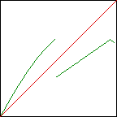
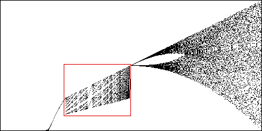
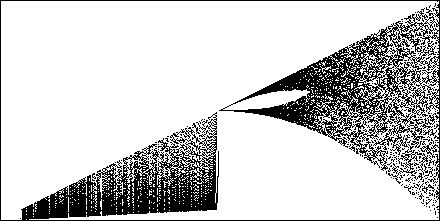

If we break the tent map, making it discontinuous, and replacing the left side with a section of the logistic map
|  |
we obtain a much more interesting bifurcation diagram. The right side looks very similar to that of the tent map, but what about the left side? Here is the bifurcation diagram, and two successive magnifications.
|  |
| Click to magnify. |
The position of the jump from logistic map to tent map certainly has an
influence on the bifurcation diagram. Here we move the jump from
|  |
| Click to animate. |
We introduce this example to show giving up continuity, a questionable assumption in many real applications, can introduce entirely new behaviors.
Return to Deterministic Chaos.